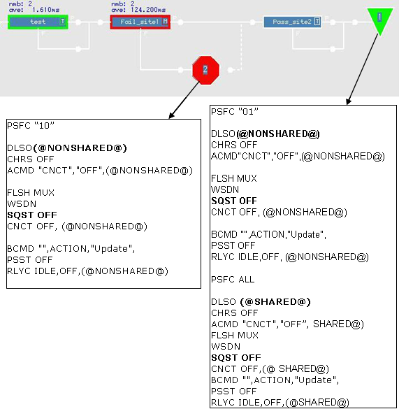

Standard disconnect sequence
When the test system resources are disconnected from the DUT and the tester is set to the "disconnect" state, a standard disconnect sequence is used within SmarTest by default.
By default, SmarTest executes a standard disconnect sequence, performed in the following order. SmarTest always performs this sequence when starting.
- Setting the sequencer to high impedance state.
- Disconnecting the analog modules from the pogo pins.
- Powering down the device power supplies in the reverse order to that entered in the level setup.
- Disconnecting the digital channels from the pogo pins.
When executing the fail branch of run and branch test-suites, SmarTest automatically changes the active sites so that only the failing sites of the Run and Branch test suites are active. For a stop bin, the standard disconnect sequence is applied only for the non-shared pins if not all sites have been binned. For the final disconnect with all sites binned, the standard disconnect sequence is applied for all pins and all remaining passing sites.
- If the test suites within a test flow require a running clock or if the control pin of a device has to be kept at a certain state.
- If you need to disconnect different utility lines among the test suites within a test flow.
- If you need to disconnect power pins separately.
Using the standard disconnect sequence
The standard disconnect sequence can be called through the DISCONNECT API in a test method, or by clicking the Disconnect button in the SmarTest Eclipse window.
The content of the standard disconnect sequence is shown below. For information on how to inspect the sequence by the MCDLog refer to Using the Trace Function.
DLSO (@) CHRS OFF FLSH MUX WSDN SQST OFF CNCT OFF,(@) BCMD "",ACTION,"Update", PSST OFF RLYC IDLE,OFF,(@)
The "@" in the sequence means that all pins are accessed. If there are shared pins between multi-sites, SmarTest is able to differentiate shared pins (using "@SHARED@") and non-shared pins (using "@NONSHARED@") in the standard disconnect sequence. During test flow execution, after the bad device goes into bad bin, the related non-shared pins on the failing site will be disconnected, while the shared pins among all the sites keep connected until the end of test flow.
Example
In a 2-site test flow, site 1 fails and site 2 passes. In the figure below, site 1 is in focus.
The MCDLog file for disconnecting each site after binning will look like the following:

Functional changes
- Introduced before SmarTest 6.3.2